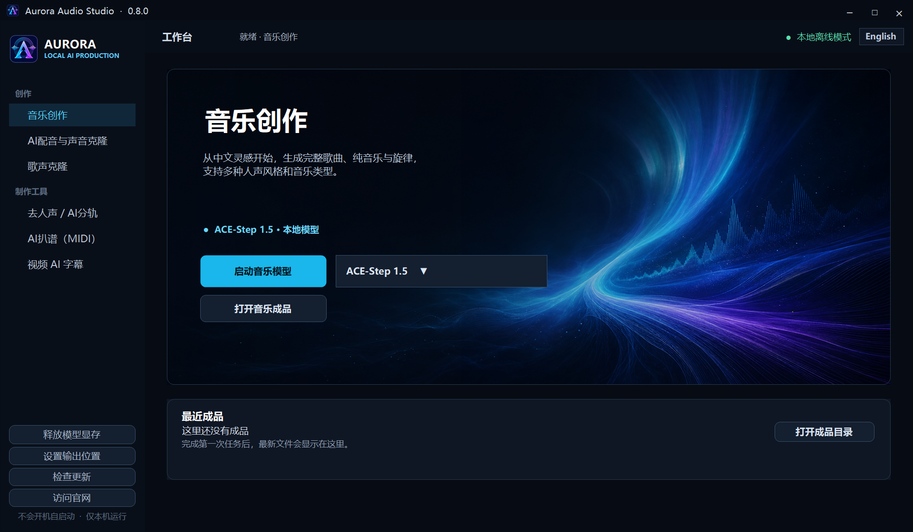

给创作者用的本地 AI 音频工作室
音乐创作、AI 配音、歌声克隆、去人声分轨、AI 扒谱和视频字幕，一个桌面软件里启动和管理。不要求用户会命令行。
本地优先
中文 / English
自包含 exe
不含模型权重

音乐创作、AI 配音、歌声克隆、去人声分轨、AI 扒谱和视频字幕，一个桌面软件里启动和管理。不要求用户会命令行。

用 ACE-Step 1.5 等本地模型生成歌曲、纯音乐、旋律和灵感草稿。
启动 IndexTTS2、GPT-SoVITS、CosyVoice 等配音与声音克隆入口。
用 Seed-VC 等工具保留旋律和唱法，替换演唱音色。
输出纯人声 Vocal 和纯伴奏 Instrumental，方便翻唱、混音和扒谱。
把清晰旋律音频转换成 MIDI 和音符事件表。
打开 Subtitle Edit / Faster-Whisper 类工作流，生成并校对时间轴字幕。
| 功能 | 默认入口 | 用途 |
|---|---|---|
| 音乐创作 | ACE-Step 1.5 | 歌曲、伴奏、旋律草稿 |
| AI 配音 | IndexTTS2 | 旁白、对白、说话音色克隆 |
| 歌声克隆 | Seed-VC 44.1k | 歌声音色转换 |
| 去人声 / 分轨 | BS-RoFormer | 纯人声和纯伴奏 |
| AI 扒谱 | Basic Pitch | MIDI 和音符事件 |
| 视频字幕 | Subtitle Edit | SRT 字幕和时间轴校对 |
Aurora Audio Studio is a local-first Windows launcher for AI audio production: music generation, AI voice, singing voice conversion, vocal separation, MIDI transcription, and subtitles. It is made for creators who do not want to use command-line tools.